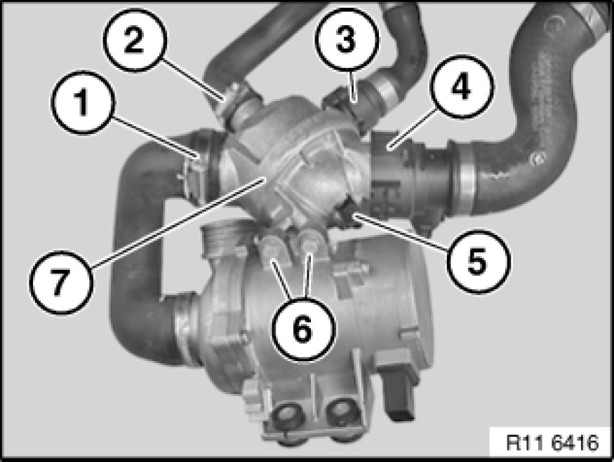

Thermostat: Service and Repair
11 53 000 - Removing and installing/replacing coolant thermostat (N52K)

Warning!
Danger of scalding!
Only perform this work after engine has cooled down.

Recycling
Catch and dispose of drained coolant in a suitable container.
Observe country-specific waste-disposal regulations.

Important!
Protect plug connections against coolant and contamination.
Cover plug connections with suitable materials.

Necessary preliminary tasks:
- Drain coolant

Note:
For purposes of clarity, the picture and text refer to the component when removed.
Unfasten hose clip (1).
Tightening torque 11 53 5AZ [1][2]11 53 Coolant Thermostat with Connections.
Remove coolant hose.
Unfasten hose clip (2).
Tightening torque 11 53 6AZ [1][2]11 53 Coolant Thermostat with Connections.
Remove coolant hose.
Unlock and detach coolant hose (3).
Unlock and detach coolant hose (4).
Disconnect plug connection (5).
Release screws (6).
Tightening torque 11 53 1AZ [1][2]11 53 Coolant Thermostat with Connections.
Remove coolant thermostat (7).

Assemble engine.